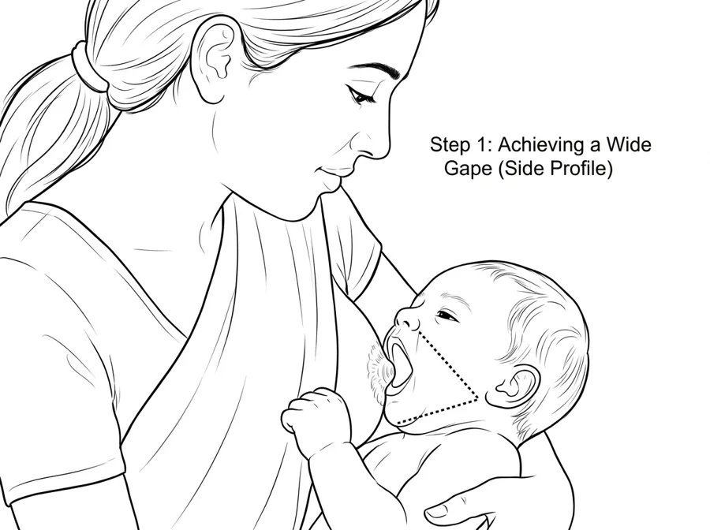
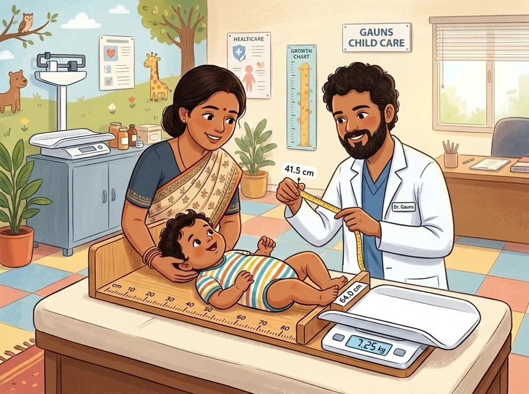
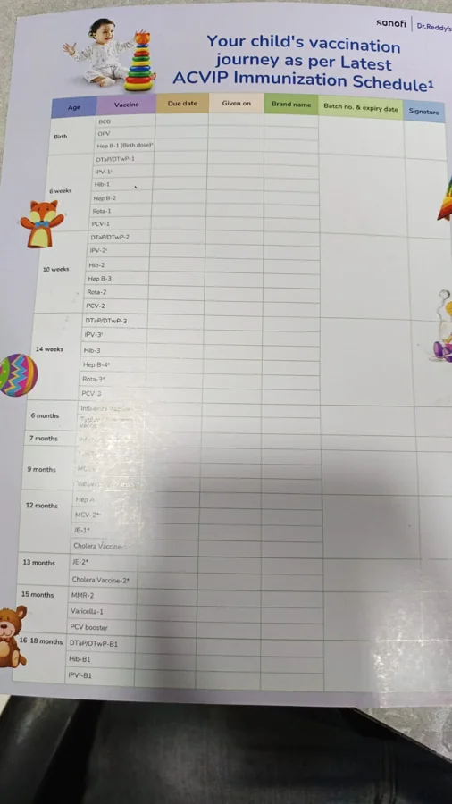
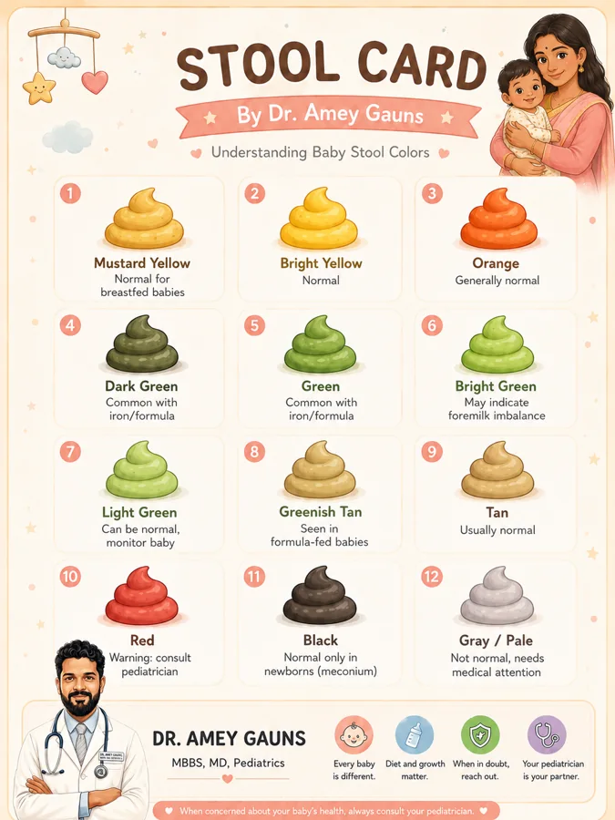
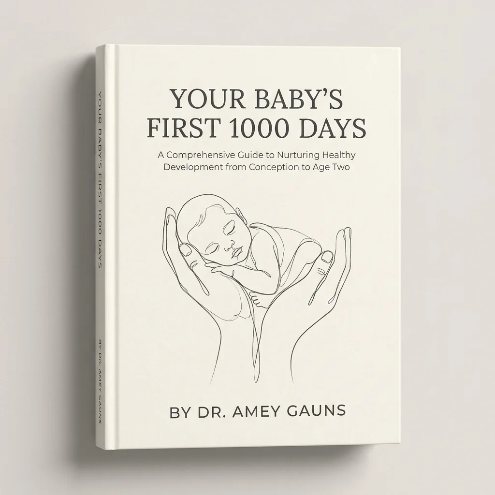

Know what is normal
Age-appropriate guidance drawn from the doctor-authored book.

Pregnancy Newborn Infant Toddler
Doctor-guided answers, vaccination records, growth tracking, feeding support and urgent warning signs, organised around your child’s age.
Created by Dr Amey Gauns • Parent-friendly • Private child records
Your baby is 6 months old today.
Start with today’s question
Open the relevant guide or record without searching through scattered messages and websites.
Check feeding cues, wet nappies, latch support and when to arrange a review.
Open feeding guidance →Keep due dates, given dates and visit details together in one practical record.
View vaccination record →Compare common colours and understand which changes need prompt medical advice.
Open stool guide →Recognise urgent warning signs and find first-aid guidance for anxious moments.
See urgent warning signs →Your child’s changing needs
Choose a stage to see the guidance, records and checklists parents are most likely to need.
NEWBORN CARE
TODAY’S FOCUS
Track feeding cuesKnow signs of effective milk transfer
Review birth vaccinesRecord dates and clinic details
Safe sleep checkA firm, flat, clear sleep surface
Clarity for everyday care
Age-appropriate guidance drawn from the doctor-authored book.

Vaccinations, growth, milestones, appointments and notes.

Warning signs and clear guidance on seeking professional care.
Sleep with safety and reassurance
Sleep changes quickly during the first year. Thousand Days helps parents understand normal patterns, build calming routines and keep every nap and night sleep safer.
Place a healthy baby on their back for naps and nighttime sleep during the first year.
Use a separate cot, crib or bassinet with a firm, flat mattress and fitted sheet—without pillows, loose blankets, toys or bumpers.
Keep the baby’s sleep space close to the parent’s bed, ideally for at least the first six months.
If baby falls asleep in a car seat, swing or carrier, move them to a firm, flat sleep surface as soon as practical.
A calm place for busy parents



“What should I watch after my baby’s vaccine?”
Find relevant guidance →The complete book, inside the app
Read the full guide in the app, search by topic, and keep notes or highlights beside the sections that matter to your family.
Meet the author
Dr Amey Gauns created Your Baby’s First 1,000 Days to give parents practical, calm and understandable guidance from pregnancy through toddlerhood.
Trust, privacy and clear boundaries
Written around the book and medical guidance of Dr Amey Gauns.
Source links and guidance boundaries are kept alongside parent-facing information.
Your child’s notes, growth entries and vaccination records stay together in the app.
No product marketplace or advertising distracts from your child’s care record.
Urgent warning signs and first-aid guidance always direct parents to professional care.
Important medical disclaimer Thousand Days supports parent education and record keeping. It does not replace a paediatrician, emergency service, diagnosis or individual medical advice. In an emergency, contact your local emergency service or seek immediate medical care.
Support for the days that matter
Create your child’s record and keep trusted guidance, vaccinations, growth and important notes together.